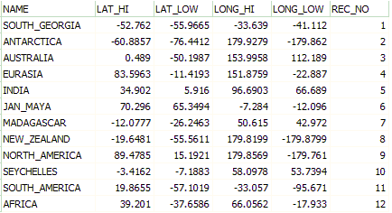
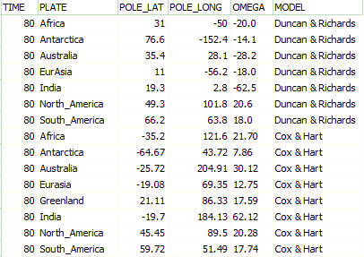
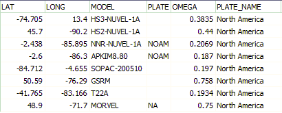

Plate Motion Data Files
| Table Output | File | ||||||||||||||||||||
 |
Plate Outline File := DBDirectory + 'continental_crust.dbf' This is a polygon shapefile. |
||||||||||||||||||||
 |
Plate Poles File := DBDirectory + 'total_poles.dbf'
|
||||||||||||||||||||
 |
Plate models in Current Motions File := MainProgramDirectory + 'current_rotations_vN.dbf'
To add another model, add it to the file, with one line for each plate, including the Euler poles. |
Last revision 1/7/2018